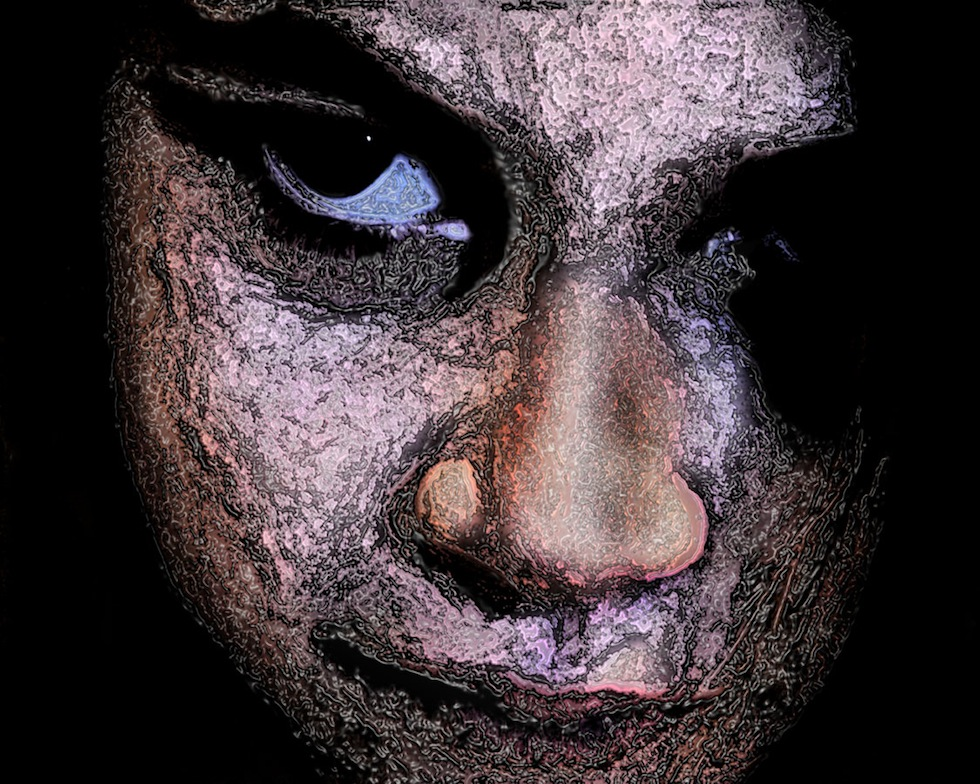
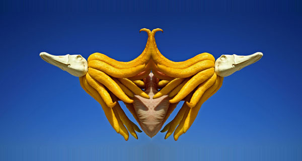
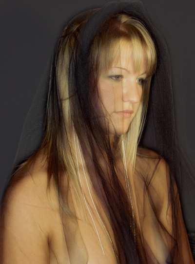
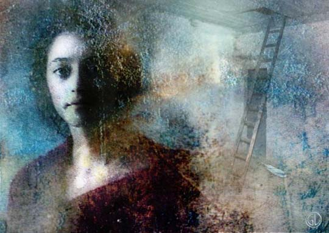
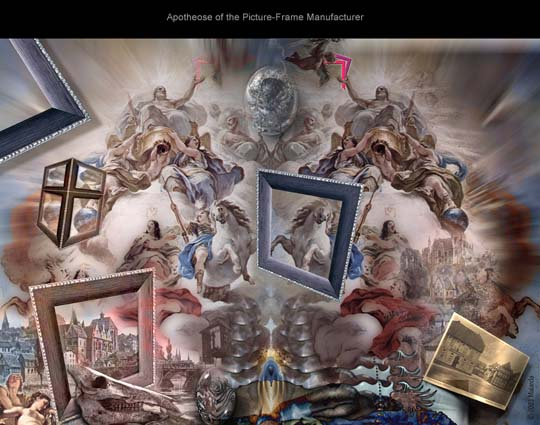
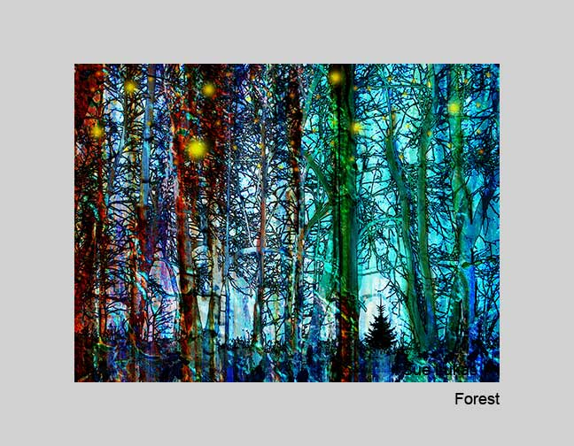

IMAGES OF THE DAY 95
02/01/2024 - 02/10/2024
02/01/2024
Photo-Based
The Painting of Light
#CRW 6635
by HoryMa
Click image to access artist's full exhibit

02/02/2024
Photo-Based
Photographic Digital Art
Birdy
by Shannon Hourigan
Click image to access artist's full exhibit


02/03/2024
Photo-Based
Post-Post-Modernist Digital Art
Glare
by Neil Howe
Click image to access artist's full exhibit

02/04/2024
Photo-Based
Photo Sculpture
Autonomous
by Ellen Jantzen
Click image to access artist's full exhibit

02/05/2024
Photo-Based
Photographing Girls
Girl with Veil
by Albert Juergens
Click image to access artist's full exhibit
02/06/2024
Photo-Based
Digital Media
Then and Now
by Sherry Karver
Click image to access artist's full exhibit

02/07/2024
Photo-Based
Digital Photography
Florida Elm
by Roger Leege
Click image to access artist's full exhibit


02/08/2024
Photo-Based
Portraits
Once There Was a Prison
by Gun Legler
Click image to access artist's full exhibit

02/09/2024
Photo-Based
Surreal
Apotheosis
by Karl-Luwig Leiter
Click image to access artist's full exhibit

02/10/2024
Photo-Based
Photo Collages
Forest
by Susan Lukas
Click image to access artist's full exhibit